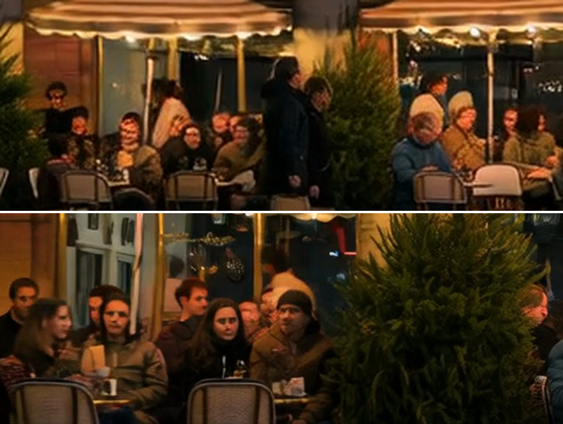

La misma foto, el mismo prompt y la misma semilla, generados en una RTX 5060 Ti de 16 GB. La única diferencia entre A y B es la atención: la normal de PyTorch contra SageAttention 2.2.
A · sin SageAttention166 s
B · con SageAttention81 s
Aceleración2,05×
vs
frame 1 / 81
Haz clic en un video para ampliarlo 2,5× en ese punto (los dos videos se amplían juntos). Usa ‹ › o las flechas del teclado para avanzar frame a frame.
Todas las variantes
Variante
Qué cambia
Tiempo
vs A
Resultado
A base
4 pasos con la LoRA lightx2v
166 s
—
referencia
B SageAttention
A + SageAttention 2.2 (KJNodes, modo auto)
81 s
2,05× más rápido
misma calidad
C 3 samplers v1
6 pasos: 2 sin LoRA (cfg 3.5) + 4 con LoRA
239 s
0,69×
inventa luces
D Sage + v1
C + SageAttention
144 s
1,16×
inventa luces
E Sage + v2
8 pasos: 2 sin LoRA (cfg 3.5)
219 s
0,76×
inventa luces
F Sage + v3
6 pasos: 2 sin LoRA (cfg 2.0)
144 s
1,15×
inventa un arco
G Sage + v4
10 pasos: 3 sin LoRA (cfg 3.5)
225 s
0,74×
inventa un arco
H Sage + v5
12 pasos: 4 sin LoRA (cfg 2.5)
273 s
0,61×
fiel a la foto
Con un prompt neutro, sin "warm lights glowing":
K Sage
Como B, con prompt neutro
89 s
1,87×
fiel a la foto
I Sage + v3
Como F, con prompt neutro
144 s
1,15×
fiel a la foto
J Sage + v5
Como H, con prompt neutro
273 s
0,61×
fiel a la foto
Qué se ve
B tarda la mitad y se ve igual.La fachada, la luz, los letreros y el nivel de detalle coinciden con A. No aparecieron frames negros, un fallo que se reporta con SageAttention en tarjetas Blackwell.
El movimiento de la gente no es idéntico.SageAttention cuantiza la atención, así que el muestreo toma una trayectoria un poco distinta y la gente camina diferente (PSNR de 22,9 dB contra A). Es una variación, no una pérdida de calidad: cambia como cambiaría con otra semilla.
Los 3 samplers fallaban por la combinación de prompt y configuración, no por la técnica.Sin la LoRA y con un cfg mayor que 1, el modelo obedece mucho más al prompt. Con "warm lights glowing" y unos pinos en la foto, terminaba decorándolos con luces navideñas (C, D y E) o agregando un arco iluminado (F y G). Con más pasos y un cfg moderado (H), o con un prompt neutro (I y J), el resultado es fiel a la foto.
No está claro que los 3 samplers den mejor movimiento.Cuando funcionan, I y J no se ven claramente mejores que K, y tardan entre 1,6 y 3 veces más. Para esta foto, la configuración simple con SageAttention es la mejor relación calidad/tiempo. Lección: con los 3 samplers, describe solo lo que hay en la foto y el movimiento que quieres, sin adjetivos que el modelo pueda "dibujar".
Es un solo run por variante.El 2× supera el 30 a 40 % que reportan los foros. Para una cifra firme haría falta repetir cada variante varias veces.
Resolución: 480p contra 720p

Frame 60 recortado: arriba a 480p, abajo a 720p. Con caras pequeñas, la resolución importa más que cualquier ajuste del muestreo. Con SageAttention, un clip a 720p tarda unos 281 s.
Configuración: RTX 5060 Ti 16 GB · Ryzen 9 7900X · 32 GB de RAM · ComfyUI 0.39 portable · PyTorch 2.14 + CUDA 13.0 · Wan 2.2 I2V 14B fp8_scaled + LoRA lightx2v de 4 pasos · 832×480, 81 frames, 16 fps, semilla 424242 · el tiempo se mide desde que el trabajo empieza a ejecutarse, con los modelos ya cargados.